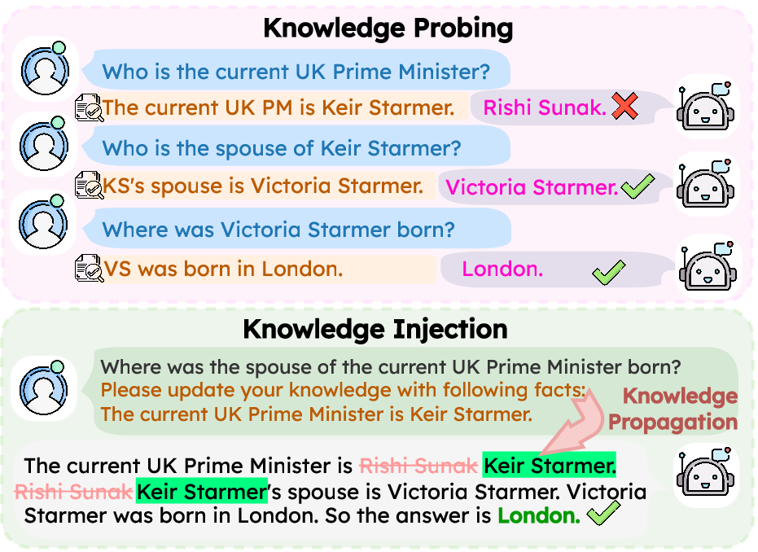
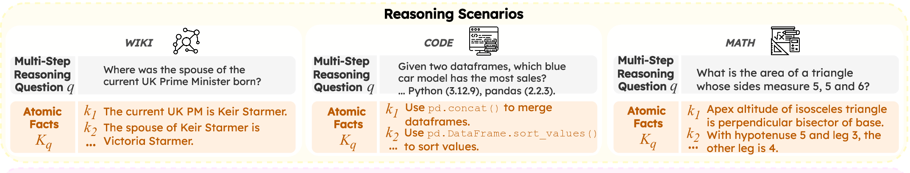
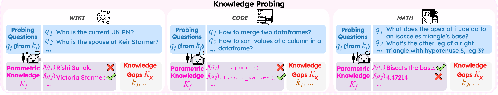
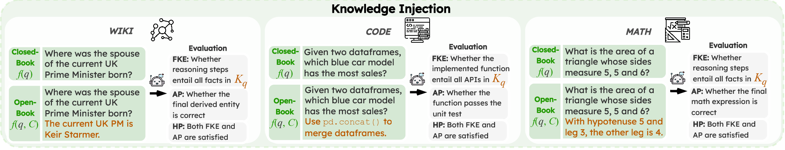

A common solution for mitigating outdated or incorrect information in Large Language Models (LLMs) is to provide updated facts in-context or through knowledge editing. However, these methods introduce knowledge conflicts when the knowledge update fails to overwrite the model's parametric knowledge, which propagate to faulty reasoning. Current benchmarks for this problem largely focus only on single knowledge updates and fact recall without evaluating how these updates affect downstream reasoning. In this work, we introduce Track (Testing Reasoning Amid Conflicting Knowledge), a new benchmark for studying how LLMs propagate new knowledge through multi-step reasoning when it conflicts with the model's initial parametric knowledge. Spanning three reasoning-intensive scenarios (WIKI, CODE, and MATH), Track introduces multiple, realistic conflicts to mirror real-world complexity. Our results reveal that providing updated facts to models for reasoning can worsen performance compared to providing no updated facts at all, and that this performance degradation exacerbates as more updated facts are provided. We show this failure stems from both inability to faithfully integrate updated facts, and also flawed reasoning even when knowledge is integrated. Track provides a rigorous new benchmark to measure and guide future progress on propagating conflicting knowledge in multi-step reasoning.
LLMs can have outdated or incorrect internal knowledge, e.g., about a formal head of state, a deprecated API, or a wrong mathematical procedure.
Common mitigations (in-context learning or knowledge editing) introduce Knowledge Conflicts between the new facts and the model's internal beliefs, but typically, LLMs can often recall a newly injected fact.
However, the critical question of whether models can reason with injected knowledge that conflicts with their parametric beliefs remains underexplored, which we call the problem of Knowledge Propagation.

Two-stage evaluation: Knowledge Probing → Knowledge Injection.
We introduce Track to evaluate how LLMs propagate conflicting knowledge through multi-step reasoning. Unlike prior benchmarks, Track introduces multiple, realistic knowledge conflicts across diverse, reasoning-intensive domains to mirror real-world complexity and test true knowledge propagation. It uses a two-stage framework: ① Knowledge Probing first identifies each model's specific knowledge gaps, then ② Knowledge Injection provides conflicting facts at inference time to test whether the model can propagate them through reasoning.
Key Takeaways:



Full illustration of the Track benchmark across three reasoning scenarios: Multi-Hop QA (WIKI), Code Generation (CODE), and Mathematical Reasoning (MATH). Each example contains: question q, atomic facts Kq, probing pairs (qi, ai), and answer a.
| Statistic | WIKI | CODE | MATH |
|---|---|---|---|
| # Questions | 500 | 500 | 500 |
| Avg. Atomic Facts | 4.00 | 3.82 | 5.16 |
| Avg. Tokens (Q) | 38 | 199 | 97 |
| Avg. Tokens (Probe Q) | 20 | 47 | 28 |
| Avg. Tokens (Fact) | 12 | 26 | 40 |
Diversity in reasoning complexity and question lengths ensures comprehensive evaluation across scenarios.
In the knowledge probing stage, we query each model on atomic facts derived from the benchmark questions, generating 10 responses per fact. We define Knowledge Confidence (KConf) as the proportion of correct responses, and classify a fact as known if the correct answer is the most frequent response.
Finding 1: Models exhibit highly polarized KConf; they either know a fact with near-certainty (KConf ≈ 1) or are clearly unaware (KConf ≈ 0), with little in between.
Finding 2: The distribution of Known vs. Unknown facts varies across scenarios (WIKI has the most unknowns because many facts post-date model training cutoffs) and models (larger and closed-source models generally know more facts).
KConf distributions of Known (blue) and Unknown (red) facts across three scenarios. WIKI has the most unknown facts due to cutoff knowledge.
In the knowledge injection stage, we test how models reason when given their own missing facts as conflicting knowledge. Methods include Base Model (no injection), Append (in-context facts), FT-CK (fine-tuning on conflicting knowledge), MeLLo (retrieval-augmented reasoning), and Append-T (extended thinking, for Qwen-3 and o4-mini).
We also vary Knowledge Aggregation Scope (KAS): the number of atomic facts provided at injection time. At KAS=1, only the one relevant fact is given. At KAS=10, 100, or 500, increasing numbers of irrelevant facts are mixed in, simulating a shared update environment where the model must find what is relevant.
Finding 3: Most knowledge injection methods show limited improvements or even degraded performance compared to the closed-book baseline, especially on CODE and MATH. Extended thinking (Append-T) can even hurt performance for smaller Qwen-3 models.
Finding 4: Performance degrades as KAS grows. When more irrelevant facts are present alongside the relevant ones, models struggle to identify and use the pertinent knowledge (e.g., Qwen-3 1.7B on WIKI drops from 83.6% HP at KAS=1 to 22.2% at KAS=500).
HP on WIKI across KAS levels. Qwen-3 Append degrades sharply; Llama and GPT are more stable.
To understand where failures come from, we analyze them at two levels. At the fact level, we track each atomic fact through the reasoning chain and record whether it was entailed (used correctly), directly failed (the first step needing it went wrong), or led to error propagation (later steps failed as a result of an earlier mistake).
At the answer level, we compare three metrics: AP (the rate of correct answers regardless of whether provided facts were used), FKE (the rate of cases where all required facts were correctly used in reasoning), and HP (the rate of correct final answers that also used all facts faithfully). The gap between AP and FKE reflects unfaithful integration; the gap between FKE and HP reflects flawed reasoning even after correct integration.
Finding 5: Models often fail to faithfully incorporate provided facts. Even when the final answer is correct, it may come from parametric knowledge by coincidence rather than genuine use of the injected facts. When integration does fail, errors tend to propagate through the rest of the reasoning chain.
Finding 6: Even when models successfully use all provided facts, they can still produce wrong answers. The FKE–HP gap is largest in CODE: o4-mini reaches 76.7% FKE but only 40.4% HP.
WIKI
CODE
MATH
Error propagation is the main failure mode, most severe in WIKI where most facts fall outside model training knowledge.
On WIKI, Llama models show a large AP–FKE gap: they sometimes answer correctly without using the injected facts at all.
@inproceedings{feng-etal-2026-tracking,
title = "Tracking the Limits of Knowledge Propagation: How {LLM}s Fail at Multi-Step Reasoning with Conflicting Knowledge",
author = "Feng, Yiyang and
Chen, Zeming and
Wu, Haotian and
Zhou, Jiawei and
Bosselut, Antoine",
editor = "Demberg, Vera and
Inui, Kentaro and
Marquez, Llu{\'i}s",
booktitle = "Proceedings of the 19th Conference of the {E}uropean Chapter of the {A}ssociation for {C}omputational {L}inguistics (Volume 1: Long Papers)",
month = mar,
year = "2026",
address = "Rabat, Morocco",
publisher = "Association for Computational Linguistics",
url = "https://aclanthology.org/2026.eacl-long.273/",
doi = "10.18653/v1/2026.eacl-long.273",
pages = "5813--5847",
ISBN = "979-8-89176-380-7",
}